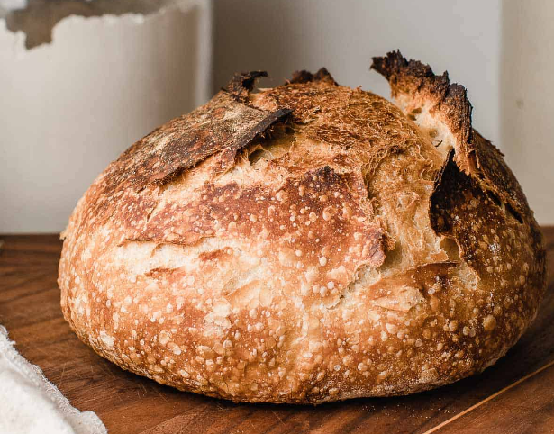

Sourdough Bread

Descripton
Sourdough is slow-fermented bread. It’s unique because it does not require commercial yeast in order to rise.
Instead, sourdough bread is made with a live fermented culture a sourdough starter, which acts as a natural
leavening agent. Sourdough is known for its characteristic tangy flavor, chewy texture and crisp, crackly crust.
Ingredients
- 45 grams active sourdough starter;
- 305 grams filtered water at temperature around 85 to 90 degrees F;
- 370 grams organic bread flour;
- 30 grams organic whole wheat flour;
- 7 grams fine sea salt.
Directions
-
In a large bowl, mix starter and water with a fork, until starter is dispersed. Add flours, mixing with a
spatula first. Then with your hand until a shaggy dough is formed, just enough so that flour is not visible.
-
Cover with a damp cloth and let sit for 30 minutes.
-
Once rested, add salt to top of dough and liberally knead the dough for two minute. Then perform your 1st
of stretch and folds. Let rest for 30 minutes.
-
Then perform your 2nd set. Let rest for 30 minutes. Then perform your 3rd set. Let rest for 30 minutes.
Then perform your 4th and final set. 4 sets of stretch and folds, 30 minutes apart.
-
After those stretch and folds are completed, you will let the dough finish its bulk ferment. This means
letting the dough rise on the counter for around 6-7ish hours total (from 1st set of stretch and folds)
if your house is around 72 degrees. It will take more time if it is cooler, or less time if it warmer.
Your dough is finished proofing when: it has risen about 75% (not quite doubled in size), has a glossy
top and is puffy, with a bubble or two around the edges of the bowl/bucket. It should jiggle a bit as well
when you shake it. These are the signs to look for, rather than going off of time. Time is a general notation
because the temperature of water you used and air temperature will be different for everyone.
-
Now you'll gently move the dough out of the bowl onto a floured work surface. Let the dough rest there for
10-15 minutes.
-
Then, shape the dough. You can watch the video below to learn how to shape it into a round boule.
-
Once shaped, use a bench scraper to put the dough into a banneton (proofing basket) that has been liberally
dusted with rice flour, seam side of the dough facing up (so the top of the dough is what is touching the
bottom of banneton) when it is placed in banneton.
-
Cover with a damp cloth, and let rise for a final time, on the counter. This will take about 2 hours,
if your house is around 70 degrees. OR you can put the banneton with dough, in a plastic bag or covered
with a shower cap (this ensures the dough will not dry out) in the refrigerator and let the final rise happen
overnight. The dough can be in the refrigerator for 10-12 hours at this stage.
-
Once your dough has gone through its final rise and has risen slightly and is puffy on top, preheat your
oven with dutch oven in it to 450 degrees F. You can test to see if your dough is ready by doing gently
pressing a floured thumb into the dough. If it indents and gradually releases, but still holds a finger shape,
you're ready! If you press your finger in and the indent doesn't move or release, that means it is overproofed
(but still bake it!). If your fingerprint jumps right back up to flat, your dough is underproofed (but still
bake it!). Let it ferment in half hour more increments, until ready.
-
Wait until oven is preheated, then place parchment over the top of your dough and flip over, so that the seam
side is now on the parchment paper and you are able to score the top of the dough.
-
Score the dough with a bread lame, making sure to go at least 1/2 inch deep in a few spots so that dough can
release gases. Otherwise your bread will not rise.
-
Place dough on parchment paper into a dutch oven, and put cover on it. Bake for 20 minutes, covered at 450
degrees F. Then remove cover, turn heat down to 430 degrees F, and bake for 25 more minutes, until bread is
golden brown and crackly.
-
Remove from oven and place load on a cooling rack. Let cool for AT LEAST ONE HOUR before slicing. Otherwise
the crumb will be squished and the texture will be gummy.